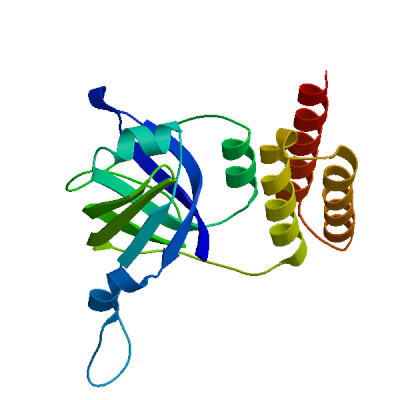
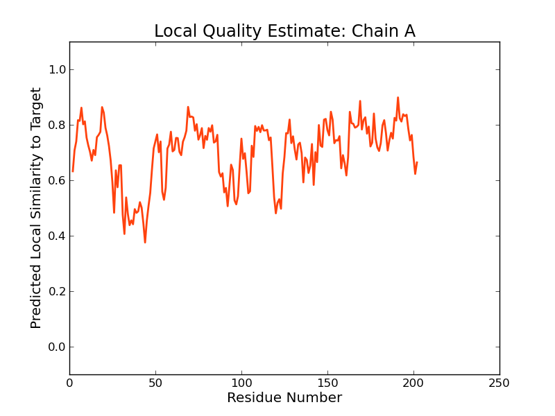
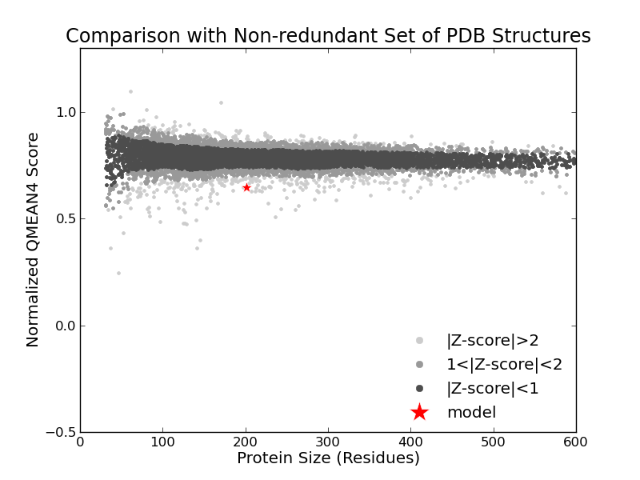
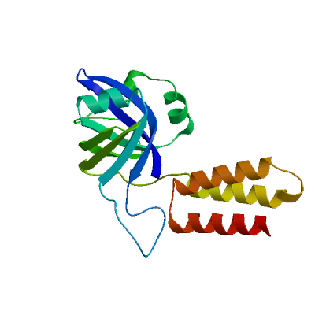
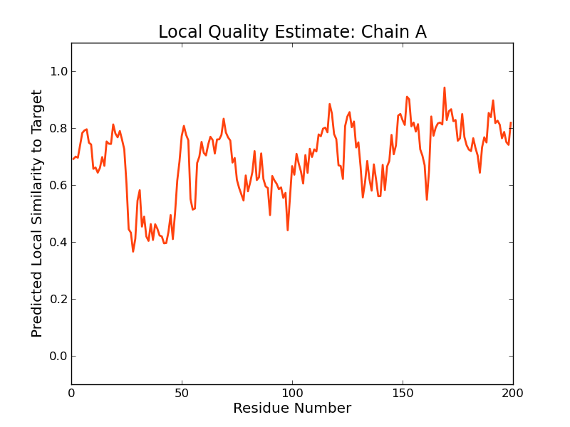
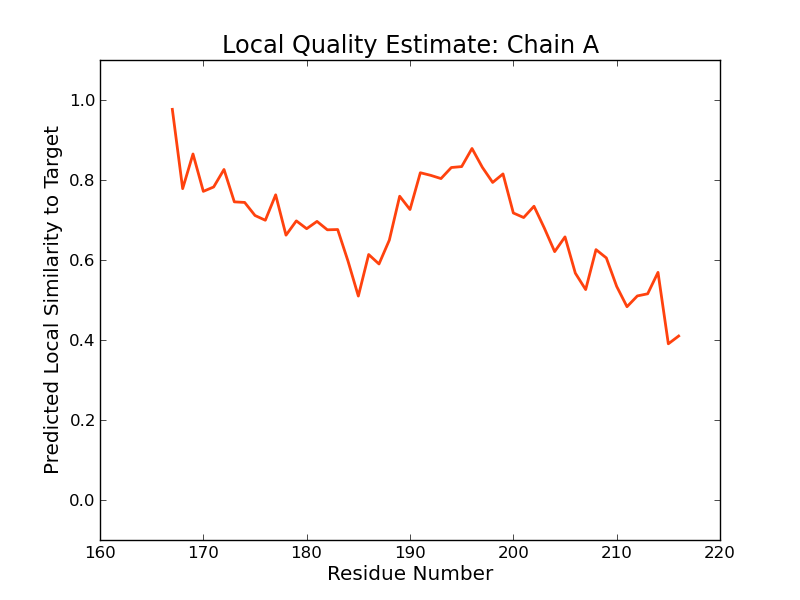
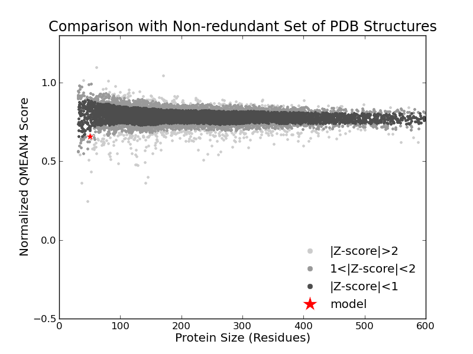

SWISS-MODEL Homology Modelling Report |
Model Building Report
This document lists the results for the homology modelling project "T451DRAFT_1643" submitted to SWISS-MODEL workspace on July 11, 2017, 7:35 p.m..The submitted primary amino acid sequence is given in Table T1.
If you use any results in your research, please cite the relevant publications:
Marco Biasini; Stefan Bienert; Andrew Waterhouse; Konstantin Arnold; Gabriel Studer; Tobias Schmidt; Florian Kiefer; Tiziano Gallo Cassarino; Martino Bertoni; Lorenza Bordoli; Torsten Schwede. (2014). SWISS-MODEL: modelling protein tertiary and quaternary structure using evolutionary information. Nucleic Acids Research (1 July 2014) 42 (W1): W252-W258; doi: 10.1093/nar/gku340.Arnold, K., Bordoli, L., Kopp, J. and Schwede, T. (2006) The SWISS-MODEL workspace: a web-based environment for protein structure homology modelling. Bioinformatics, 22, 195-201.
Benkert, P., Biasini, M. and Schwede, T. (2011) Toward the estimation of the absolute quality of individual protein structure models. Bioinformatics, 27, 343-350
Results
The SWISS-MODEL template library (SMTL version 2017-07-06, PDB release 2017-06-30) was searched with Blast (Altschul et al., 1997) and HHBlits (Remmert, et al., 2011) for evolutionary related structures matching the target sequence in Table T1. For details on the template search, see Materials and Methods. Overall 122 templates were found (Table T2).
Models
The following models were built (see Materials and Methods "Model Building"):
Model #01 | File | Built with | Oligo-State | Ligands | GMQE | QMEAN |
|---|---|---|---|---|---|---|
|  | PDB | ProMod3 Version 1.0.2. | MONOMER (matching prediction) | None | 0.55 | -3.29 |
|  |  |
| Template | Seq Identity | Oligo-state | Found by | Method | Resolution | Seq Similarity | Range | Coverage | Description |
|---|---|---|---|---|---|---|---|---|---|
| 3b5m.1.B | 30.00 | homo-dimer | HHblits | X-ray | 1.21Å | 0.35 | 0.79 | Uncharacterized protein |
| Ligand | Added to Model | Description |
|---|---|---|
| SO4 | ✕ - Not biologically relevant. | SULFATE ION |
| SO4 | ✕ - Not biologically relevant. | SULFATE ION |
Target MIQETIVITQNSSGVAHIAPMGIHIIAKDGVYAASQPGAGAAAEAQDEFIILPFRPSTTLNNLLESKTAVINYCDDVRVF
3b5m.1.B -ILESLVTTLDEQGRINLAPLGPIV------LPPQSP------GGLPQFLLRPYEGSTTCDNLLASGNAVIHVIDDALLI
Target AGCLTGRRDWP--LKPAEKI--NGQVLACALAHTEVELVRVEDDETRPKLFCKAVHTANHAPFRGFNRAQYSVLEAAILI
3b5m.1.B AKTAIGKVDASDLVVPIPGLEDTHVRLKRCHRWFAVRVTQRAGTPPRHELTARCLASGLVDPFFGFNRAKHAVIEAAVAA
Target SRLNMIPLEKIQAEIDYLRIGLEKTAGDRELEAWGWLMTVIENHIATEGVYAGNLPGADSAIAKEAVHAVNLPGTGAAKA
3b5m.1.B TRLHLLPPEEIEEELERARIAIEKTGGEPEREALQLIRRHVRESSIS---------------------------------
Target GINS
3b5m.1.B ----
Model #02 | File | Built with | Oligo-State | Ligands | GMQE | QMEAN |
|---|---|---|---|---|---|---|
|  | PDB | ProMod3 Version 1.0.2. | MONOMER (matching prediction) | None | 0.46 | -3.30 |
|  |
| Template | Seq Identity | Oligo-state | Found by | Method | Resolution | Seq Similarity | Range | Coverage | Description |
|---|---|---|---|---|---|---|---|---|---|
| 2ptf.1.B | 21.67 | homo-dimer | HHblits | X-ray | 2.35Å | 0.30 | 0.75 | Uncharacterized protein MTH_863 |
| Ligand | Added to Model | Description |
|---|---|---|
| FMN | ✕ - Binding site not conserved. | FLAVIN MONONUCLEOTIDE |
| FMN | ✕ - Binding site not conserved. | FLAVIN MONONUCLEOTIDE |
Target MIQETIVITQNSSGVAHIAPMGIHIIAKDGVYAASQPGAGAAAEAQD-EFIILPFRPSTTLNNLLESKTAVINYCDDVRV
2ptf.1.B LYETIVVTW-DDSMVGNAAPIGVL-------------------CTGDDTVTLYLYQGTRTVENVLNNGRFTVNVTLDPLI
Target FAGCLTGRRDWPLKPAEKINGQVLACALAHTEVELVRVEDDETR--------PKLFCKAVHTANHA--PFRGFNRAQYSV
2ptf.1.B FTDSTLGDLEEDMFS-HYRDFLHLRGADAFFTAEVVSVKKLVKRDRFGESELHVVKARAGD-VMRAESFRMALNRGIYAV
Target LEAAILISRLNMIPLEKIQAEIDYLRIGLEKTAGDRELEAWGWLMTVIENHIATEGVYAGNLPGADSAIAKEAVHAVNLP
2ptf.1.B IESLIAYTRAEFSDPLVLRERIAEMNRVARKVGGPREKEAMRRIIQALESKIS---------------------------
Target GTGAAKAGINS
2ptf.1.B -----------
Model #03 | File | Built with | Oligo-State | Ligands | GMQE | QMEAN |
|---|---|---|---|---|---|---|
 | PDB | ProMod3 Version 1.0.2. | MONOMER | None | 0.09 | -1.26 |
|  |  |
| Template | Seq Identity | Oligo-state | Found by | Method | Resolution | Seq Similarity | Range | Coverage | Description |
|---|---|---|---|---|---|---|---|---|---|
| 4xq1.1.A | 12.24 | monomer | HHblits | X-ray | 1.40Å | 0.25 | 167 - 216 | 0.20 | Bacteriohemerythrin |
| Ligand | Added to Model | Description |
|---|---|---|
| FE | ✕ - Binding site not conserved. | FE (III) ION |
| FE | ✕ - Binding site not conserved. | FE (III) ION |
| NA | ✕ - Not biologically relevant. | SODIUM ION |
| NO3 | ✕ - Not biologically relevant. | NITRATE ION |
Target MIQETIVITQNSSGVAHIAPMGIHIIAKDGVYAASQPGAGAAAEAQDEFIILPFRPSTTLNNLLESKTAVINYCDDVRVF
4xq1.1.A --------------------------------------------------------------------------------
Target AGCLTGRRDWPLKPAEKINGQVLACALAHTEVELVRVEDDETRPKLFCKAVHTANHAPFRGFNRAQYSVLEAAILISRLN
4xq1.1.A --------------------------------------------------------------------------------
Target MIPLEKIQAEIDYLRIGLEKTAGDRE-LEAWGWLMTVIENHIATEGVYA--GNLPGADSAIAKEAVHAVNLPGTGAAKAG
4xq1.1.A ------IFDMVNKLHDTAAT-GNRSEIGKQLDALIDYVVMHFKSEETEMQKKGYADFAA---------------------
Target INS
4xq1.1.A ---
Materials and Methods
Template Search
Template search with Blast and HHBlits has been performed against the SWISS-MODEL template library (SMTL, last update: 2017-07-06, last included PDB release: 2017-06-30).
The target sequence was searched with BLAST (Altschul et al., 1997) against the primary amino acid sequence contained in the SMTL. A total of 2 templates were found.
An initial HHblits profile has been built using the procedure outlined in (Remmert, et al., 2011), followed by 1 iteration of HHblits against NR20. The obtained profile has then be searched against all profiles of the SMTL. A total of 120 templates were found.
Template Selection
For each identified template, the template's quality has been predicted from features of the target-template alignment. The templates with the highest quality have then been selected for model building.
Model Building
Models are built based on the target-template alignment using ProMod3. Coordinates which are conserved between the target and the template are copied from the template to the model. Insertions and deletions are remodelled using a fragment library. Side chains are then rebuilt. Finally, the geometry of the resulting model is regularized by using a force field. In case loop modelling with ProMod3 fails, an alternative model is built with PROMOD-II (Guex, et al., 1997).
Model Quality Estimation
The global and per-residue model quality has been assessed using the QMEAN scoring function (Benkert, et al., 2011) . For improved performance, weights of the individual QMEAN terms have been trained specifically for SWISS-MODEL.
Ligand Modelling
Ligands present in the template structure are transferred by homology to the model when the following criteria are met (Gallo -Casserino, to be published): (a) The ligands are annotated as biologically relevant in the template library, (b) the ligand is in contact with the model, (c) the ligand is not clashing with the protein, (d) the residues in contact with the ligand are conserved between the target and the template. If any of these four criteria is not satisfied, a certain ligand will not be included in the model. The model summary includes information on why and which ligand has not been included.
Oligomeric State Conservation
Homo-oligomeric structure of the target protein is predicted based on the analysis of pairwise interfaces of the identified template structures. For each relevant interface between polypeptide chains (interfaces with more than 10 residue-residue interactions), the QscoreOligomer (Mariani et al., 2011) is predicted from features such as similarity to target and frequency of observing this interface in the identified templates (Kiefer, Bertoni, Biasini, to be published). The prediction is performed with a random forest regressor using these features as input parameters to predict the probability of conservation for each interface. The QscoreOligomer of the whole complex is then calculated as the weight-averaged QscoreOligomer of the interfaces. The oligomeric state of the target is predicted to be the same as in the template when QscoreOligomer is predicted to be higher or equal to 0.5.
References
Altschul, S.F., Madden, T.L., Schaffer, A.A., Zhang, J., Zhang, Z., Miller, W. and Lipman, D.J. (1997) Gapped BLAST and PSI-BLAST: a new generation of protein database search programs. Nucleic Acids Res, 25, 3389-3402.
Remmert, M., Biegert, A., Hauser, A. and Soding, J. (2012) HHblits: lightning-fast iterative protein sequence searching by HMM-HMM alignment. Nat Methods, 9, 173-175.
Guex, N. and Peitsch, M.C. (1997) SWISS-MODEL and the Swiss-PdbViewer: an environment for comparative protein modeling. Electrophoresis, 18, 2714-2723.
Sali, A. and Blundell, T.L. (1993) Comparative protein modelling by satisfaction of spatial restraints. J Mol Biol, 234, 779-815.
Benkert, P., Biasini, M. and Schwede, T. (2011) Toward the estimation of the absolute quality of individual protein structure models. Bioinformatics, 27, 343-350.
Mariani, V., Kiefer, F., Schmidt, T., Haas, J. and Schwede, T. (2011) Assessment of template based protein structure predictions in CASP9. Proteins, 79 Suppl 10, 37-58.
Table T1:
Primary amino acid sequence for which templates were searched and models were built.
QVLACALAHTEVELVRVEDDETRPKLFCKAVHTANHAPFRGFNRAQYSVLEAAILISRLNMIPLEKIQAEIDYLRIGLEKTAGDRELEAWGWLMTVIENH
IATEGVYAGNLPGADSAIAKEAVHAVNLPGTGAAKAGINS
Table T2:
| Template | Seq Identity | Oligo-state | Found by | Method | Resolution | Seq Similarity | Coverage | Description |
|---|---|---|---|---|---|---|---|---|
| 3b5m.1.A | 31.22 | homo-dimer | BLAST | X-ray | 1.21Å | 0.36 | 0.79 | Uncharacterized protein |
| 3b5m.1.B | 31.22 | homo-dimer | BLAST | X-ray | 1.21Å | 0.36 | 0.79 | Uncharacterized protein |
| 3b5m.1.A | 30.00 | homo-dimer | HHblits | X-ray | 1.21Å | 0.35 | 0.79 | Uncharacterized protein |
| 3b5m.1.B | 30.00 | homo-dimer | HHblits | X-ray | 1.21Å | 0.35 | 0.79 | Uncharacterized protein |
| 2ptf.1.A | 21.67 | homo-dimer | HHblits | X-ray | 2.35Å | 0.30 | 0.75 | Uncharacterized protein MTH_863 |
| 2ptf.1.B | 21.67 | homo-dimer | HHblits | X-ray | 2.35Å | 0.30 | 0.75 | Uncharacterized protein MTH_863 |
| 2iml.1.B | 26.47 | homo-dimer | HHblits | X-ray | 1.65Å | 0.31 | 0.71 | Hypothetical protein |
| 2iml.1.A | 26.47 | homo-dimer | HHblits | X-ray | 1.65Å | 0.31 | 0.71 | Hypothetical protein |
| 2nr4.1.A | 22.41 | homo-dimer | HHblits | X-ray | 1.85Å | 0.29 | 0.73 | Conserved hypothetical protein |
| 2nr4.1.B | 22.41 | homo-dimer | HHblits | X-ray | 1.85Å | 0.29 | 0.73 | Conserved hypothetical protein |
| 4z85.1.A | 23.68 | homo-dimer | HHblits | X-ray | 1.70Å | 0.31 | 0.47 | 2-nitrobenzoate nitroreductase |
| 3fge.1.A | 11.67 | homo-dimer | HHblits | X-ray | 1.74Å | 0.26 | 0.50 | putative flavin reductase with split barrel domain |
| 2r0x.1.A | 12.93 | homo-dimer | HHblits | X-ray | 1.06Å | 0.28 | 0.48 | Possible flavin reductase |
| 3bpk.1.A | 18.64 | homo-dimer | HHblits | X-ray | 1.56Å | 0.26 | 0.49 | Nitrilotriacetate monooxygenase component B |
| 1eje.1.A | 14.53 | homo-dimer | HHblits | X-ray | 2.20Å | 0.27 | 0.49 | FMN-BINDING PROTEIN |
| 3cb0.1.A | 19.13 | homo-dimer | HHblits | X-ray | 1.60Å | 0.28 | 0.48 | 4-HYDROXYPHENYLACETATE 3-MONOOXYGENASE |
| 3cb0.1.B | 19.13 | homo-dimer | HHblits | X-ray | 1.60Å | 0.28 | 0.48 | 4-HYDROXYPHENYLACETATE 3-MONOOXYGENASE |
| 4ira.1.B | 19.13 | homo-dimer | HHblits | X-ray | 2.20Å | 0.28 | 0.48 | 4-hydroxyphenylacetate 3-monooxygenase |
| 2d5m.1.A | 13.04 | homo-dimer | HHblits | X-ray | 1.05Å | 0.27 | 0.48 | flavoredoxin |
| 3bnk.1.A | 14.04 | homo-dimer | HHblits | X-ray | 2.05Å | 0.27 | 0.47 | Flavoredoxin |
| 3rh7.1.A | 12.39 | homo-dimer | HHblits | X-ray | 3.00Å | 0.27 | 0.47 | Hypothetical oxidoreductase |
| 3rh7.3.A | 12.39 | homo-dimer | HHblits | X-ray | 3.00Å | 0.27 | 0.47 | Hypothetical oxidoreductase |
| 3e4v.1.A | 14.91 | homo-dimer | HHblits | X-ray | 1.40Å | 0.26 | 0.47 | NADH:FMN oxidoreductase like protein |
| 1usc.1.A | 15.65 | homo-dimer | HHblits | X-ray | 1.24Å | 0.26 | 0.48 | PUTATIVE STYRENE MONOOXYGENASE SMALL COMPONENT |
| 1i0r.1.A | 17.70 | homo-dimer | HHblits | X-ray | 1.50Å | 0.27 | 0.47 | CONSERVED HYPOTHETICAL PROTEIN |
| 1i0r.1.B | 17.70 | homo-dimer | HHblits | X-ray | 1.50Å | 0.27 | 0.47 | CONSERVED HYPOTHETICAL PROTEIN |
| 4r82.1.A | 12.28 | homo-dimer | HHblits | X-ray | 1.66Å | 0.26 | 0.47 | Oxidoreductase |
| 4l82.1.A | 11.40 | homo-dimer | HHblits | X-ray | 2.00Å | 0.26 | 0.47 | RifeA.00250.a |
| 5cho.1.A | 12.17 | homo-dimer | HHblits | X-ray | 2.37Å | 0.25 | 0.48 | Flavin reductase |
| 1rz1.1.A | 10.53 | homo-dimer | HHblits | X-ray | 2.10Å | 0.25 | 0.47 | phenol 2-hydroxylase component B |
| 2r6v.1.A | 14.04 | homo-dimer | HHblits | X-ray | 1.25Å | 0.25 | 0.47 | Uncharacterized protein PH0856 |
| 4hx6.1.B | 11.40 | homo-dimer | HHblits | X-ray | 1.89Å | 0.25 | 0.47 | Oxidoreductase |
| 4hx6.1.A | 11.40 | homo-dimer | HHblits | X-ray | 1.89Å | 0.25 | 0.47 | Oxidoreductase |
| 4hx6.2.B | 11.40 | homo-dimer | HHblits | X-ray | 1.89Å | 0.25 | 0.47 | Oxidoreductase |
| 4hx6.3.B | 11.40 | homo-dimer | HHblits | X-ray | 1.89Å | 0.25 | 0.47 | Oxidoreductase |
| 4f07.1.A | 8.77 | homo-dimer | HHblits | X-ray | 2.30Å | 0.25 | 0.47 | Styrene monooxygenase component 2 |
| 4f07.3.B | 8.77 | homo-dimer | HHblits | X-ray | 2.30Å | 0.25 | 0.47 | Styrene monooxygenase component 2 |
| 3hmz.1.A | 13.27 | homo-dimer | HHblits | X-ray | 1.50Å | 0.26 | 0.47 | Flavin reductase domain protein, FMN-binding |
| 2d37.1.A | 16.07 | homo-dimer | HHblits | X-ray | 1.70Å | 0.25 | 0.47 | hypothetical NADH-dependent FMN oxidoreductase |
| 2d36.1.A | 16.07 | homo-dimer | HHblits | X-ray | 2.30Å | 0.25 | 0.47 | hypothetical NADH-dependent FMN oxidoreductase |
| 1wgb.1.A | 7.83 | monomer | HHblits | X-ray | 2.00Å | 0.23 | 0.48 | probable flavoprotein |
| 1yoa.1.A | 7.83 | homo-dimer | HHblits | X-ray | 1.90Å | 0.23 | 0.48 | putative flavoprotein |
| 4ywn.1.A | 7.89 | homo-dimer | HHblits | X-ray | 1.80Å | 0.23 | 0.47 | NADH-fmn oxidoreductase |
| 3pft.1.A | 7.96 | homo-dimer | HHblits | X-ray | 1.60Å | 0.24 | 0.47 | Flavin reductase |
| 3pft.1.B | 7.96 | homo-dimer | HHblits | X-ray | 1.60Å | 0.24 | 0.47 | Flavin reductase |
| 2qck.1.A | 7.08 | homo-dimer | HHblits | X-ray | 1.90Å | 0.23 | 0.47 | Flavin reductase domain protein |
| 2ecu.1.B | 8.18 | homo-dimer | HHblits | X-ray | 1.30Å | 0.23 | 0.46 | flavin reductase (HpaC) of 4-hydroxyphenylacetate 3-monooxygnease |
| 2ecu.1.A | 8.18 | homo-dimer | HHblits | X-ray | 1.30Å | 0.23 | 0.46 | flavin reductase (HpaC) of 4-hydroxyphenylacetate 3-monooxygnease |
| 4xhy.1.A | 10.19 | homo-dimer | HHblits | X-ray | 1.53Å | 0.24 | 0.45 | Flavin reductase domain protein, FMN-binding protein |
| 3nfw.1.A | 15.73 | homo-dimer | HHblits | X-ray | 1.60Å | 0.28 | 0.37 | Flavin reductase-like, FMN-binding protein |
| 3nfw.1.B | 15.73 | homo-dimer | HHblits | X-ray | 1.60Å | 0.28 | 0.37 | Flavin reductase-like, FMN-binding protein |
| 3k86.1.A | 11.49 | homo-dimer | HHblits | X-ray | 2.00Å | 0.27 | 0.36 | Chlorophenol-4-monooxygenase component 1 |
| 3k86.1.B | 11.49 | homo-dimer | HHblits | X-ray | 2.00Å | 0.27 | 0.36 | Chlorophenol-4-monooxygenase component 1 |
| 3in6.1.A | 19.30 | homo-dimer | HHblits | X-ray | 2.12Å | 0.27 | 0.24 | FMN-binding protein |
| 3in6.1.B | 19.30 | homo-dimer | HHblits | X-ray | 2.12Å | 0.27 | 0.24 | FMN-binding protein |
| 1vl7.1.A | 14.29 | homo-dimer | HHblits | X-ray | 1.50Å | 0.28 | 0.23 | hypothetical protein alr5027 |
| 2i02.1.A | 12.73 | homo-dimer | HHblits | X-ray | 1.80Å | 0.29 | 0.23 | general stress protein of COG3871 |
| 2i02.1.B | 12.73 | homo-dimer | HHblits | X-ray | 1.80Å | 0.29 | 0.23 | general stress protein of COG3871 |
| 2e83.1.A | 10.71 | homo-dimer | HHblits | X-ray | 1.52Å | 0.28 | 0.23 | FMN-binding protein |
| 2hhz.1.A | 8.93 | homo-dimer | HHblits | X-ray | 2.00Å | 0.27 | 0.23 | Pyridoxamine 5'-phosphate oxidase-related |
| 2htd.1.A | 12.73 | homo-dimer | HHblits | X-ray | 1.60Å | 0.28 | 0.23 | Predicted flavin-nucleotide-binding protein from COG3576 family structurally related to pyridoxine 5'-phosphate oxidase |
| 2q9k.1.A | 10.53 | homo-dimer | HHblits | X-ray | 1.59Å | 0.25 | 0.24 | Uncharacterized protein |
| 5esc.1.A | 20.37 | homo-dimer | HHblits | X-ray | 2.00Å | 0.29 | 0.22 | HupZ |
| 2fhq.1.A | 14.55 | homo-dimer | HHblits | X-ray | 1.87Å | 0.27 | 0.23 | putative general stress protein |
| 2fhq.1.B | 14.55 | homo-dimer | HHblits | X-ray | 1.87Å | 0.27 | 0.23 | putative general stress protein |
| 3tgv.1.A | 14.81 | homo-dimer | HHblits | X-ray | 2.00Å | 0.28 | 0.22 | Heme-binding protein HutZ |
| 2hq7.1.A | 16.98 | homo-dimer | HHblits | X-ray | 2.00Å | 0.29 | 0.22 | Protein, related to general stress protein 26(GS26) of B.subtilis |
| 2hq7.1.B | 16.98 | homo-dimer | HHblits | X-ray | 2.00Å | 0.29 | 0.22 | Protein, related to general stress protein 26(GS26) of B.subtilis |
| 4qvb.1.A | 16.67 | homo-dimer | HHblits | X-ray | 2.30Å | 0.27 | 0.22 | Rv1155 protein |
| 1ty9.1.A | 14.29 | homo-dimer | HHblits | X-ray | 1.80Å | 0.24 | 0.23 | Phenazine biosynthesis protein phzG |
| 1ty9.1.B | 14.29 | homo-dimer | HHblits | X-ray | 1.80Å | 0.24 | 0.23 | Phenazine biosynthesis protein phzG |
| 2asf.1.A | 16.98 | homo-dimer | HHblits | X-ray | 1.60Å | 0.28 | 0.22 | Hypothetical protein Rv2074 |
| 5jab.1.A | 16.98 | homo-dimer | HHblits | X-ray | 1.65Å | 0.28 | 0.22 | Biliverdin reductase Rv2074 |
| 5jab.1.B | 16.98 | homo-dimer | HHblits | X-ray | 1.65Å | 0.28 | 0.22 | Biliverdin reductase Rv2074 |
| 5jab.2.A | 16.98 | homo-dimer | HHblits | X-ray | 1.65Å | 0.28 | 0.22 | Biliverdin reductase Rv2074 |
| 5jab.2.B | 16.98 | homo-dimer | HHblits | X-ray | 1.65Å | 0.28 | 0.22 | Biliverdin reductase Rv2074 |
| 4hms.1.A | 14.55 | homo-dimer | HHblits | X-ray | 1.33Å | 0.24 | 0.23 | Phenazine biosynthesis protein phzG |
| 4hms.1.B | 14.55 | homo-dimer | HHblits | X-ray | 1.33Å | 0.24 | 0.23 | Phenazine biosynthesis protein phzG |
| 4hmw.1.A | 14.55 | homo-dimer | HHblits | X-ray | 1.53Å | 0.24 | 0.23 | Pyridoxamine 5'-phosphate oxidase |
| 4hmw.1.B | 14.55 | homo-dimer | HHblits | X-ray | 1.53Å | 0.24 | 0.23 | Pyridoxamine 5'-phosphate oxidase |
| 1rfe.1.A | 16.98 | monomer | HHblits | X-ray | 2.00Å | 0.27 | 0.22 | hypothetical protein Rv2991 |
| 1t9m.1.A | 10.91 | homo-dimer | HHblits | X-ray | 1.90Å | 0.24 | 0.23 | probable pyridoxamine 5'-phosphate oxidase |
| 3vy2.1.A | 11.54 | homo-dimer | HHblits | X-ray | 1.60Å | 0.28 | 0.22 | FMN-binding protein |
| 5bnc.1.A | 10.91 | homo-dimer | HHblits | X-ray | 2.25Å | 0.23 | 0.23 | heme binding protein MSMEG_6519 |
| 5bnc.1.B | 10.91 | homo-dimer | HHblits | X-ray | 2.25Å | 0.23 | 0.23 | heme binding protein MSMEG_6519 |
| 1nrg.1.A | 12.96 | homo-dimer | HHblits | X-ray | 1.95Å | 0.25 | 0.22 | pyridoxine 5'-phosphate oxidase |
| 1g77.1.A | 7.41 | homo-dimer | HHblits | X-ray | 2.10Å | 0.24 | 0.22 | PYRIDOXINE 5`-PHOSPHATE OXIDASE |
| 1g79.1.A | 7.41 | homo-dimer | HHblits | X-ray | 2.00Å | 0.24 | 0.22 | PYRIDOXINE 5'-PHOSPHATE OXIDASE |
| 1wv4.1.A | 7.41 | homo-dimer | HHblits | X-ray | 2.60Å | 0.24 | 0.22 | Pyridoxamine 5'-phosphate oxidase |
| 1wv4.1.B | 7.41 | homo-dimer | HHblits | X-ray | 2.60Å | 0.24 | 0.22 | Pyridoxamine 5'-phosphate oxidase |
| 1dnl.1.A | 7.41 | homo-dimer | HHblits | X-ray | 1.80Å | 0.24 | 0.22 | PYRIDOXINE 5'-PHOSPHATE OXIDASE |
| 3vy5.1.A | 11.54 | homo-dimer | HHblits | X-ray | 1.40Å | 0.27 | 0.22 | FMN-binding protein |
| 3f7e.1.A | 9.43 | homo-dimer | HHblits | X-ray | 1.23Å | 0.26 | 0.22 | Pyridoxamine 5'-phosphate oxidase-related, FMN-binding |
| 3f7e.1.B | 9.43 | homo-dimer | HHblits | X-ray | 1.23Å | 0.26 | 0.22 | Pyridoxamine 5'-phosphate oxidase-related, FMN-binding |
| 1ci0.1.A | 12.96 | homo-dimer | HHblits | X-ray | 2.70Å | 0.24 | 0.22 | PROTEIN (PNP OXIDASE) |
| 1wli.1.A | 11.76 | homo-dimer | HHblits | X-ray | 1.60Å | 0.28 | 0.21 | FMN-binding protein |
| 1wli.1.B | 11.76 | homo-dimer | HHblits | X-ray | 1.60Å | 0.28 | 0.21 | FMN-binding protein |
| 1wlk.1.A | 11.76 | homo-dimer | HHblits | X-ray | 1.90Å | 0.28 | 0.21 | FMN-binding protein |
| 1wlk.2.A | 11.76 | homo-dimer | HHblits | X-ray | 1.90Å | 0.28 | 0.21 | FMN-binding protein |
| 3a20.1.A | 11.76 | homo-dimer | HHblits | X-ray | 1.60Å | 0.28 | 0.21 | FMN-binding protein |
| 3amf.1.A | 11.76 | homo-dimer | HHblits | X-ray | 1.60Å | 0.28 | 0.21 | FMN-binding protein |
| 3a6r.1.A | 11.76 | homo-dimer | HHblits | X-ray | 1.20Å | 0.28 | 0.21 | FMN-binding protein |
| 1axj.1.A | 11.76 | monomer | HHblits | NMR | NA | 0.28 | 0.21 | FMN-BINDING PROTEIN |
| 1flm.1.A | 11.76 | homo-dimer | HHblits | X-ray | 1.30Å | 0.28 | 0.21 | PROTEIN (FMN-BINDING PROTEIN) |
| 1flm.1.B | 11.76 | homo-dimer | HHblits | X-ray | 1.30Å | 0.28 | 0.21 | PROTEIN (FMN-BINDING PROTEIN) |
| 3a6q.1.A | 11.76 | homo-dimer | HHblits | X-ray | 1.40Å | 0.28 | 0.21 | FMN-binding protein |
| 3awh.1.A | 11.76 | homo-dimer | HHblits | X-ray | 1.60Å | 0.28 | 0.21 | FMN-binding protein |
| 3vya.1.A | 11.76 | homo-dimer | HHblits | X-ray | 2.40Å | 0.28 | 0.21 | FMN-binding protein |
| 3hy8.1.A | 13.21 | homo-dimer | HHblits | X-ray | 2.50Å | 0.25 | 0.22 | Pyridoxine-5'-phosphate oxidase |
| 3db0.1.A | 5.66 | homo-tetramer | HHblits | X-ray | 2.00Å | 0.23 | 0.22 | Lin2891 protein |
| 3db0.1.B | 5.66 | homo-tetramer | HHblits | X-ray | 2.00Å | 0.23 | 0.22 | Lin2891 protein |
| 4xpy.1.A | 12.24 | monomer | HHblits | X-ray | 1.13Å | 0.25 | 0.20 | Bacteriohemerythrin |
| 4xpw.1.A | 12.24 | monomer | HHblits | X-ray | 1.17Å | 0.25 | 0.20 | Bacteriohemerythrin |
| 4xq1.1.A | 12.24 | monomer | HHblits | X-ray | 1.40Å | 0.25 | 0.20 | Bacteriohemerythrin |
| 4xpx.1.A | 12.50 | monomer | HHblits | X-ray | 1.03Å | 0.25 | 0.20 | Bacteriohemerythrin |
| 3ixf.1.A | 4.76 | homo-dimer | HHblits | X-ray | 1.58Å | 0.26 | 0.17 | Dehaloperoxidase B |
| 5k1l.1.B | 4.76 | homo-dimer | HHblits | X-ray | 1.08Å | 0.26 | 0.17 | Dehaloperoxidase B |
| 4hsw.1.A | 4.76 | monomer | HHblits | X-ray | 1.22Å | 0.26 | 0.17 | Dehaloperoxidase A |
| 4hsw.2.A | 4.76 | monomer | HHblits | X-ray | 1.22Å | 0.26 | 0.17 | Dehaloperoxidase A |
| 2ek8.1.A | 15.00 | monomer | HHblits | X-ray | 1.80Å | 0.28 | 0.17 | Aminopeptidase |
| 4kn3.1.A | 4.88 | monomer | HHblits | X-ray | 1.78Å | 0.25 | 0.17 | Dehaloperoxidase A |
| 2crn.1.A | 23.08 | monomer | HHblits | NMR | NA | 0.27 | 0.11 | UBASH3A protein |